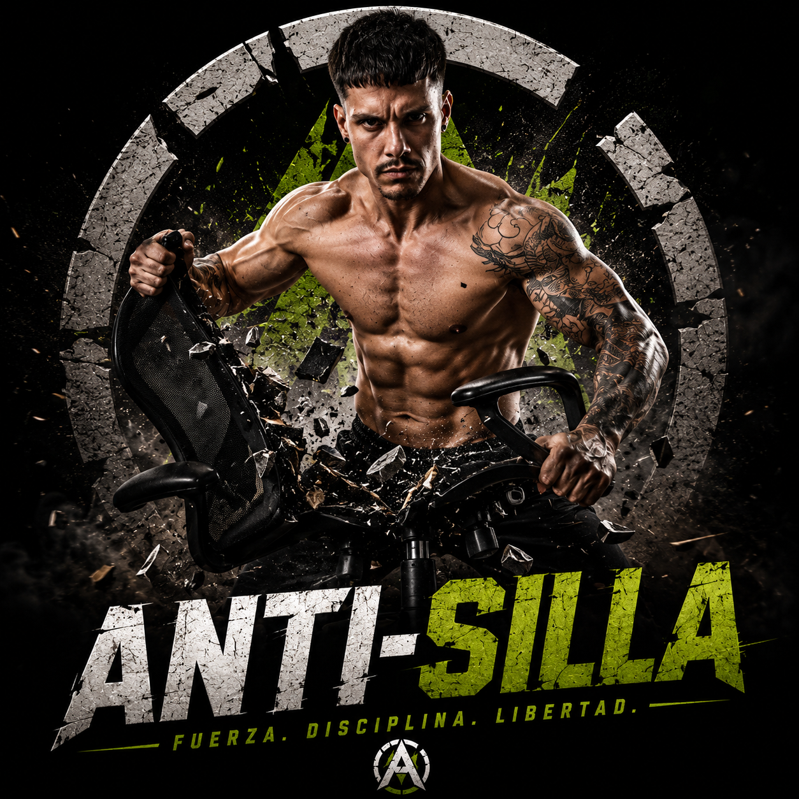

01
Deja de volver a cero
No necesitas otro plan imposible. Necesitas entender qué hace que abandones cuando el trabajo aprieta.
Si pasas demasiadas horas sentado y sientes que te has ido dejando, este diagnóstico te muestra qué te está frenando y por dónde volver a empezar.
VER MI PUNTO DE PARTIDA →
Un sistema que sobreviva a tu semana
No necesitas otro plan imposible. Necesitas entender qué hace que abandones cuando el trabajo aprieta.
Descubre tu punto de partida y el primer ajuste para recuperar fuerza, energía y disciplina.
Tu resultado aparece ahora. El plan te llega al email cuando conectemos el envío automático.